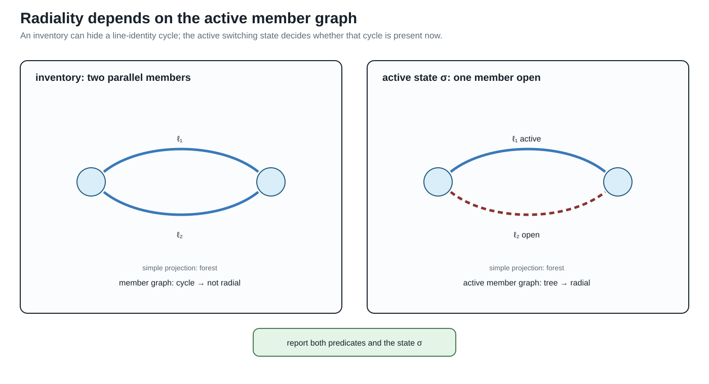
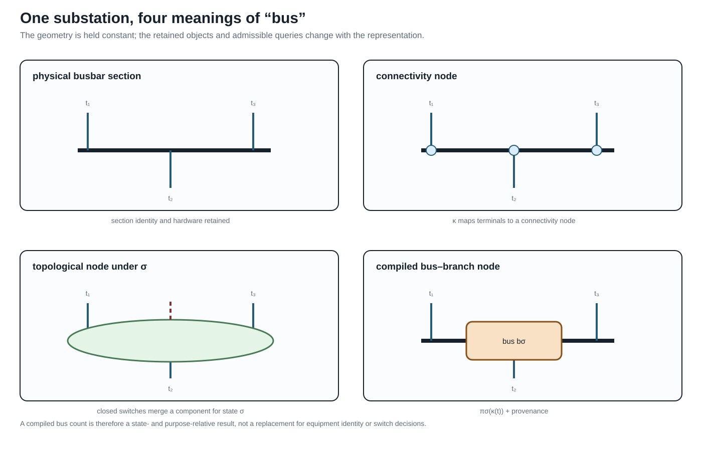

Node–breaker, bus–breaker, and topology processing
Page status: scoped topology-processing definitions with a generated node–breaker switch-state and radiality witness; larger running-network topology lifts remain future work.
This chapter specializes the general view and surgery contract in From source graphs to views and graph surgery. It is authoritative for the node–breaker state processor and its concrete $\kappa$/$\pi_\sigma$ quotient, while the general view registry, lowering boundary, unknown-state family semantics, and degeneracy diagnostics are defined there. The examples below therefore explain this specialization rather than introducing a competing transformation vocabulary.
The general taxonomy in Maps between representation frameworks types $\pi_\sigma$ as an edge-contraction quotient. In particular it is not an ordinary homomorphism between loopless simple graphs, because it deliberately identifies endpoints of closed switch edges. The resulting parallel members and contraction-created loops use the normative conventions in Multigraphs for expert modelers.
Topology processing is a state-conditioned compilation. It is not the same as deleting switches from a graph or replacing every closed switch by a zero impedance line without recording the state that justified the replacement.
Connectivity and topological nodes
Let $\mathcal T$ be the set of conducting-equipment terminals and let $\mathcal C$ be connectivity nodes. A connectivity model records a partial incidence map
\[\kappa:\mathcal T\rightharpoonup\mathcal C\]
for zero-impedance terminal connections. Switches, breakers, disconnectors, busbar sections, and jumpers are separate objects with a state $\sigma_e$. For a fixed active state $\sigma$, form the graph
\[G_{\mathrm{closed}}(\sigma) = (\mathcal C,\{e:\sigma_e=\mathrm{closed}\}).\]
The topological nodes are the connected components of $G_{\mathrm{closed}}(\sigma)$. Write
\[\pi_\sigma:\mathcal C\longrightarrow\mathcal N_\sigma\]
for the component quotient. A node–breaker bus–branch view is then compiled by attaching each terminal to $\pi_\sigma(\kappa(t))$ and retaining the conducting equipment whose terminals are connected to distinct or equal topological nodes. In the general registry this is a state-conditioned quotient with provenance; here the notation makes the switch-connectivity relation explicit.
This gives the state-resolved distinction:
| Object | Retained meaning |
|---|---|
| connectivity node | a zero-impedance connection point in the detailed model |
| switch/breaker | an identified asset with state, control, and protection semantics |
| topological node | a component of closed connectivity for one declared state |
| bus–branch bus | a compiled algorithmic node, often a topological node but not necessarily a physical bus |
An open switch remains an asset and a possible future action even though it is not an edge of $G_{\mathrm{closed}}(\sigma)$. A closed switch may disappear from the compiled electrical equations for that state, but its provenance and decision identity must remain recoverable.
State-resolved compilation
Let $M$ be a terminal or port–factor model with switch states. A topology compiler is a partial map
\[C_{\mathrm{top}}(M,\sigma) = (G_{\mathrm{bus}}(\sigma),\operatorname{prov}_\sigma, \operatorname{recover}_\sigma).\]
The compiler must declare:
- the admissible state domain and whether unknown or failed states are allowed;
- the zero-impedance relation used for contraction;
- the component algorithm and treatment of isolated terminals;
- the equipment classes that become bus–branch arcs;
- the handling of loops, parallel members, multi-terminal factors, and grounding factors;
- the map from each generated bus or arc to its source terminals and assets;
- whether the compiled state is fixed, a scenario, or a decision variable.
For a fixed state, contracting closed ideal switches can preserve the declared electrical connectivity relation. It does not preserve a switching decision, protection boundary, maintenance identity, or an open-state contingency unless those are carried by $\operatorname{prov}_\sigma$ and the surrounding model. The general surgery result may be a graph or a family with three-valued connectivity summaries; the present compiler assumes a declared resolved state when it constructs $G_{\mathrm{bus}}(\sigma)$.
Worked contraction state
Consider connectivity nodes $a,b,c,d$, a switch $s_{ab}$, and identified non-switch members
\[e_{ac},\quad e_{bc},\quad e_{ab},\quad e_{cd}.\]
When $s_{ab}$ is open, $\pi_{\mathrm{open}}$ leaves all four nodes distinct. When it is closed, the quotient identifies $a$ and $b$ as the topological node $u=[a,b]$. The member images are then
\[e_{ac}\mapsto\{u,c\},\qquad e_{bc}\mapsto\{u,c\},\qquad e_{ab}\mapsto\{\!\{u,u\}\!\},\qquad e_{cd}\mapsto\{c,d\}.\]
Thus one state change simultaneously creates a parallel class $\{e_{ac},e_{bc}\}$ and a graph loop $e_{ab}$. A loopless simple target would collapse the first pair and omit the loop, but those are two additional information-losing maps after the connectivity quotient. A provenance-complete compiler retains the three source-member identities and records whether the loop image is electrically redundant, represented as another factor, or rejected by the target formulation. It does not call the loop a shunt: both of its source terminals belong to the same quotient node, whereas a shunt has a declared reference or grounding relation.
If one of these source members is a two-terminal π factor, the contraction does not authorize deleting it as a graph loop. Compile its two terminal maps first; under the fixed linear assumptions in Multigraphs for expert modelers, the series contribution may cancel while its endpoint shunts combine into a one-terminal nodal stamp. Other factors may require modified nodal or tableau variables and must remain explicit.
Rooted feeder view after topology processing
After compiling a resolved state, a radiality check may construct a rooted feeder hierarchy. This is a derived map, not a replacement for the node–breaker model:
\[H_\sigma=\bigl(\mathcal N_\sigma,E_\sigma,r_\sigma, \operatorname{par}_\sigma\bigr).\]
The root $r_\sigma$ is a declared source topological node and $\operatorname{par}_\sigma$ is defined only when each active component is a tree with one root. If a switching candidate closes a tie, opens a parent branch, creates an island, or introduces multiple sources, the hierarchy must be recomputed or reported as undefined. A frozen parent map must not be used to interpret the new state.
In a meshed candidate, retain a spanning forest and mark the remaining active members as chords. The chords preserve cycle constraints and outage choices; they are not downstream branches merely because an algorithm has assigned them an orientation.
Node–breaker and bus–branch are not competing truths
The node–breaker view is the natural source for topology decisions because it retains switching equipment and detailed connectivity. The bus–branch view is often the natural target for a solved PF or OPF instance because it has fewer nodes and a conventional incidence matrix. The transformation between them is state- and purpose-relative:
| Question | Node–breaker view | State-resolved bus–branch view |
|---|---|---|
| Which breaker is open? | direct | only through provenance/state metadata |
| Are two terminals connected now? | component query | same query after $\pi_\sigma$ |
| Can a switch be operated? | direct decision object | lost if the quotient is frozen |
| What is the branch admittance? | attached factor or equipment | compiled arc relation |
| Are parallel assets distinct? | yes | yes only in a multigraph target |
| Is a multiwinding transformer native? | terminal/factor object | requires a declared compilation |
The simple graph of topological nodes is a further quotient. It may be useful for islands and partitioning, but it forgets member identity and should not be used as the source of switching or protection decisions.
Generated state witness
The artifact experiments/generated/node-breaker-state-witness.json uses four connectivity nodes, three fixed line members, and two switch assets. It enumerates four declared states: both switches open, a closed parallel switch, a closed chord, and an unknown switch. For each resolved state it reports member-radiality, simple adjacency-radiality, compiled-bus radiality, the closed-switch contraction components, and the surviving line members. For the unknown state it enumerates both admissible realizations rather than silently choosing open or closed.
The witness exposes a useful separation:
| State | Member-radial | Adjacency-radial | Interpretation |
|---|---|---|---|
| both switches open | yes | yes | resolved tree |
| parallel switch closed | no | yes | member cycle hidden by simple projection |
| chord switch closed | no | no | visible adjacency cycle |
| switch unknown | unknown | unknown | report both admissible realizations |
These are state-conditioned predicates, not properties of the equipment inventory alone. The compiled bus quotient can be radial even when the identified-member graph is not, because closed ideal switches contract connectivity components and remove self-loops from the bus view.

The active-state panel makes the qualification explicit: report both the simple-projection predicate and the identified-member predicate, together with the state $\sigma$ that selects open and closed members.

The same physical drawing is therefore not one graph with four labels: each overlay retains a different object set and answers different queries.
Relation to CIM/CGMES and software topology views
CIM distinguishes equipment terminals and connectivity/topological nodes; the topological-node layer is derived from the currently connected state rather than being a replacement for equipment identity [51, 52]. PowSyBl similarly describes topology views as a state-dependent processing step [53]. These are useful external precedents for $\kappa$ and $\pi_\sigma$; they do not by themselves specify multiconductor factor equations, member-level ratings, or decision-preserving reductions.
A bus count that falls after switch contraction is not evidence that a switching problem has been preserved. The state and the contraction map are part of the model contract.
Minimal running-case interpretation
In the running fixture, $w_0$ is a switch between $i_0$ and $i_1$. The fixed closed PF/OPF instance may compile it into a terminal connection, while the discrete extension must retain $w_0$ as an asset and state variable. The parallel lines $\ell_1$ and $\ell_2$ remain separate identified factors after topology processing; their common endpoint pair does not authorize aggregation.